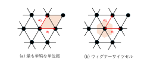
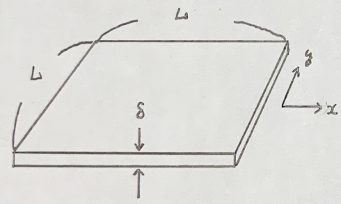

ある基本並進ベクトル\(\vec{a}_1,\vec{a}_2,\vec{a}_3\)に対し逆格子ベクトルをb1~3を以下の条件を持つように定める
$$ \vec{a}_i\cdot\vec{b}_i = 2\pi \delta_{i,j} $$上の条件をみたせばなんでもよいが、主に用いられるのは下の形式である
$$\vec{b}_1 = 2\pi\frac{\vec{a}_2\times\vec{a}_3}{\vec{a}_1\cdot\vec{a}_2\times\vec{a}_3}$$ $$\vec{b}_2 = 2\pi\frac{\vec{a}_1\times\vec{a}_3}{\vec{a}_2\cdot\vec{a}_1\times\vec{a}_3}$$ $$\vec{b}_3 = 2\pi\frac{\vec{a}_1\times\vec{a}_2}{\vec{a}_3\cdot\vec{a}_1\times\vec{a}_2}\tag{1}$$確認すると、\(\vec{A}\cdot\vec{A}\times\vec{\forall} =0\)になるので、明らかに成り立つ
ある整数g1~3を用いて逆格子ベクトルは以下のように定義される
$$\vec{G} = g_1\vec{b}_1 + g_2\vec{b}_2 + g_3\vec{b}_3 $$三角格子を考える。格子定数をlとl'とする。それぞれの基本並進ベクトルはi,j,kを用いて
$$ \vec{a}_1 = l\vec{i},\vec{a}_2 = \frac{l}{2}\vec{i}+\frac{\sqrt{3}}{2}\vec{j},\vec{a}_3 = l^{\prime}\vec{k}$$ 色が塗られた部分は単位胞という.ウィーグナーサイトセルは各単位ベクトルから垂直二等分線を引いたものになる
式(1)を使うと以下の形式になる
$$ \vec{b}_1 = \frac{2\pi}{l}(\vec{i}-\frac{1}{\sqrt{3}}\vec{j})$$ $$ \vec{b}_2 = \frac{2\pi}{l}\frac{2}{\sqrt{3}}\vec{j} $$ $$ \vec{b}_3 = \frac{2\pi}{l^{\prime}}\vec{k} $$同様に単位胞を組むと以下の図になる
結晶の格子点をn1~3の整数値を用いて以下のように定義する
$$ \vec{R} = n_1\vec{a}_1+n_2\vec{a}_2+n_3\vec{a}_3\tag{2} $$このベクトルは格子点の位置を表しているので並進対称性があるはずである
$$ U(\vec{r}) = U(\vec{r}+\vec{R}) $$このU\((\vec{r})\)をフーリエ展開する
$$ U(\vec{r}) = \Sum_{\vec{q}U_\vec{q} e^{i\vec{q}\cdot\vec{r}} $$周期性より
$$ e^{i\vec{q}\cdot(\vec{r}+\vec{R})} = e^{i\vec{q}\cdot\vec{r}} $$ したがって $$ \vec{q}\cdot{R} = 2\pi\times (整数N) $$この\(\vec{q}\)を逆格子ベクトルで展開する(qは実数)
$$ \vec{q} = q_1\vec{b}_1+q_2\vec{b}_2+q_3\vec{b}_3\tag{3} $$式(2),(3)より
$$ \vec{q}\cdot\vec{R} = 2\pi(q_1n_1+q_2n_2+q_3n_3)\tag{4} $$式(4)は整数のはずなのでqもすべて整数のはずである。よって\(\vec{q}\)と\(\vec{G}\)は同義である
$$ U(\vec{r}) = \sum_{\vec{G}}U_{\vec{G}}e^{i\vec{G}\cdot\vec{r}} $$ある波動関数\(\Psi(\vec{r})\)に対して周期境界条件を課す
$$ \Psi(\vec{r}+{}^{\forall}N_i\vec{a}_i) = \Psi(\vec{r})(N_i\in \mathbb{N}) $$波動関数もフーリエ展開することを考える
$$ \Psi(\vec{r}) = \sum_{\vec{k}}\Psi_\vec{k}e^{i\vec{k}\cdot\vec{r}} $$周期境界条件より
$$ e^{i\vec{k\cdot\vec{r}}} = e^{i\vec{k}\cdot(\vec{r}+N_1\vec{a}_i)} $$ したがって $$ N_i\vec{k}\cdot\vec{a}_i = 2\pi\times(整数N) $$波数ベクトル\(\vec{k}\)を逆格子で表すと
$$ \vec{k} = k_1\vec{b}_1+k_2\vec{b}_2 + k_3\vec{b}_3 $$ したがって $$ N_i\vec{k}\cdot\vec{a}_i = N_i(k_1\vec{b}_1+k_2\vec{b}_2 + k_3\vec{b}_3)\cdot\vec{a}_i = 2\pi N_ik_i $$上式は整数であるはずなので整数mをもちいて\(N_ik_i\equiv m_i\)である。kに許される条件は
$$ k_i = \frac{m_i}{N_i} $$ここで単位胞内部の格子点は、ベクトルの1倍以下のはずなので
\begin{cases} 0≤ k_1 < 1\\ 0≤ k_2 < 1\\ 0≤ k_3 < 1\\ \end{cases}そうなるような\(k_1\)は\(N_1\)個、\(k_2\)は\(N_2\)個、\(k_3\)は\(N_3\)個、あるはずなので\(N_1N_2N_3\)個ある。もし単位胞の取り方をウィーグナーセルに変えた時も同様の議論が可能であり、そのうち、原点を含むものを第一ブリルアンゾーンという。
結晶格子中のハミルトニアンを考える
$$ H = -\frac{\hbar^2}{2m}\nabla^2+U(\vec{r}),(U(\vec{r}) = \sum_{G} U_{\vec{G}}e^{i\vec{G}\cdot\vec{r}}) $$これの固有値方程式は
$$ H\Psi(\vec{r}) = E\Psi(\vec{r}) $$ところで運動量固有関数として以下のもの定義する
$$ W_{\vec{k}}(\vec{r}) = \frac{1}{\sqrt{V}}e^{-i\vec{k}\cdot\vec{r}} $$これは完全性\(⟨ W_{\vec{k^{\prime}}}|W_{\vec{k}}⟩ = \delta_{\vec{k}^{\prime},\vec{k}}\)を満たすものとする. では\(\vec{k}\)の行列要素を調べると
$$ ⟨ W_{\vec{k}^{\prime}}|H|W_{\vec{k}}⟩ = \epsilon_{\vec{k}}\delta_{\vec{k^{\prime}},\vec{k}}+\sum_{\vec{G}}U_{\vec{G}}\delta_{\vec{k^{\prime}}\vec{k}+\vec{G}} $$これは逆格子の取り方によって変化するので、代表として第一ブリルアンゾーンをとる.整数gを用いて空間(集合)としてSを考える
$$ S_{\vec{k}} = \{W_{\vec{k}+g_1\vec{b}_1+g_2\vec{b}_2+g_3\vec{b}_3}\} $$S内の要素は以下の波動関数で表される
$$ \Psi_{\vec{k}}(\vec{r}) = e^{i\vec{k}\cdot\vec{r}}\sum_{\vec{G}}u_{\vec{G}}e^{i\vec{G}\cdot\vec{r}}\tag{5} $$ここで以下のようなu関数(以下ブロッホ関数)を考えると
$$ u_{\vec{k}}(\vec{r}) \equiv \sum_{\vec{G}u_{\vec{G}}\cdot\vec{r}} $$（５）は簡単にできる.この形式では書けることをブロッホの定理という
$$ \Psi_{\vec{k}}(\vec{r}) = e^{i\vec{k}\cdot\vec{r}}u_k(\vec{r}) $$あるハミルトニアンの固有状態M個のうち|m⟩とする系がMm個あるとする。
$$ i\hbar\frac{\partial |m\rangle}{\partial t} = H|m\rangle $$ $$ -i\hbar\frac{\partial \langle m|}{\partial t} = \langle m|H $$この状態をとる確率は単純にPm = \(\frac{M_m}{M}\)である。すべてを足すと1になる
$$ \sum_{m}P_m = 1 $$また統計演算子(行列)ρを以下のように定義する
$$ \rho = \sum_M |m\rangle P_m\langle m| $$ $$ Tr \rho = \sum_{m}\langle m \rangle = 1 $$また任意の物理量Aの期待値は
\begin{align} \langle A\rangle &= \sum_{m}P_{m}\langle m|A|m\rangle\\ &= \sum_{m,n}P_M\langle m|A|n\rangle\langle n|m\rangle\\ &= \sum_{m,n}\langle m|A|n\rangle P_m\langle n|m\rangle\\ &= \sum_{m,n}\langle m|\rho A|m\rangle\\ &= Tr \rho A\\ \end{align}以上のことより
$$ i\hbar\frac{\partial \rho}{\partial t} = H\rho-\rho H = [H,\rho] $$これをノイマンの式という
ハミルトニアンHを無摂動項\(H_0\)と摂動項\(H^{\prime}(t)\)に分割、統計演算子ρも同様に\(\rho_0\)と\(\rho^{\prime}(t)\)に分ける。
$$ H = H_0+H^{\prime}(t) $$ $$ \rho = \rho_0+\rho^{\prime}(t) $$初期条件\(\rho(t = \\infty) = 0\)においてノイマンの式を用いて一次近似する
$$ \rho^{\prime}(t) = -\frac{i}{\hbar}\int_{-\infty}^{t}dt^{\prime}e^{-iH_0(t-t_0)/\hbar}[H^{\prime}(t^{\prime}),\rho]e^{iH_0(t-t^{\prime})/\hbar}\tag{8} $$熱平衡状態で物理量の期待値が0になるようなA(今回は電束密度\(j_z\)を想像してほしい)
$$ \langle A \rangle = Tr \rho^{\prime} A\tag{9} $$H'(t)の時間依存性を以下のように仮定する.(Bが行列であることに注意せよ)
$$ H^{\primte} = -Be^{-i\omega t + 0t}\tag{10} $$式8,9,10より
$$ \langle A\rangle = \frac{i}{\hbar}\int_{-\infty}^{t}e^{-i\omega t^{\prime}+0t^{\prime}}Tr(e^{iH_0(t-t^{\prime})/\hbar}[B,\rho]e^{iH_0(t-t^{\prime})/\hbar}A)dt^{\prime} $$すると
$$ \langle A\rangle = A(\omega)e^{-i \omega t} $$ \begin{align} (A(\omega) &= \frac{i}{\hbar}\int_{0}^{\infty}e^{-i\omega \tau+0\tau}Tr(e^{iH_0\tau/\hbar}[B,\rho]e^{iH_0\tau/\hbar}A)d\tau)\\ &= \frac{i}{\hbar}\int_{0}^\infty e^{i\omega\tau-0\tau}Tr(\rho[A_{I}(\tau),B])d\tau\tag{13} \end{align} $$ (A_I(\tau)\equiv e^{iH_0\tau}Ae^{iH_0\tau}) $$以上の式はトレースの循環性を用いたことに注意するべき.\(A_I(\tau)\)は相互作用表示と呼ばれる
結晶ポテンシャル中のd年始の波動関数はブロッホ関数となる
$$ \Psi_\vec{k}(\vec{r}) =e^{i\vec{k}\cdot\vec{r}}u_{\vec{k}}(\vec{r}) $$これは並進性\(u_{\vec{k}}(\vec{r}+\vec{a}) = u_{\vec{k}}(\vec{r})\)を満たすことに注意せよ
この波動関数はハミルトニアン\(\hat{H}\)を満たすはずなので
$$ \hat{H}e^{i\vec{k}\cdot\vec{r}}u_{\vec{k}} = Ee^{i\vec{k}\cdot\vec{r}} $$ $$ e^{-i\vec{k}\cdot\vec{r}}\hat{H}e^{i\vec{k}\cdot\vec{r}}u_{\vec{k}} = E\cdot\vec{r} $$\(e^{-i\vec{k}\cdot\vec{r}}\hat{H}e^{i\vec{k}\cdot\vec{r}}\)の部分を\(H_{\vec{k}}\)と書くこととする。すると以下の関係が存在する
$$ \langle \tilde{\Psi}_{\vec{k}}|\hat{H}|\Psi_{\vec{k}}\rangle = \langle \tilde{u}_{\vec{k}}|H_{\vec{k}}|u_{\vec{k}}\rangle $$一例として\(\hat{H}\)を以下のような形式とする
$$ \hat{H} = \frac{(-i\hbar\nabla)^2}{2m}+U(\vec{r}) $$ではこの時\(H_\vec{k}\)は
\begin{align} H_{\vec{k}} = \frac{(\hbar\vec{k}-i\hbar\nabla)^2}{2m}+U(\vec{r}) \end{align}次に速度演算子v(\(=\frac{i\hbar}{m}\nabla\))をブロッホ関数にかけて
$$ v\Psi = v r^{i\vec{k}\cdot\vec{r}}u_{\vec{k}} = e^{i\vec{k}\cdot\vec{k}}v_{\vec{k}}u_{\vec{k}} $$ $$ (v_{\vec{k}} = e^{i\vec{k}\cdot\vec{r}}\cdot\vec{r}ve^{i\vec{k}\cdot\vec{r}}) $$実際に\(v\Psi\)を計算すると
$$ v_{\vec{k}} = \frac{1}{\hbar}\nabla_{k}H_{k} $$ $$ \nabla_k = (\frac{\partial}{\partial k_x},\frac{\partial}{\partial k_y},\frac{\partial}{\partial k_z}) $$平板試料(面積:L2,厚み:δ)
この時電荷密度\(ρ = -\frac{eN_e}{L^2\delta}\)であり、電流密度\(j_x\)は
$$ j_x = \frac{I_x}{L} = \rho\delta v_x = -\frac{eN_e}{L^2}v_x $$式(13)よりAを電流密度\(j_x\),Bをy方向の電場ポテンシャルに選ぶ. この時\(A_I(\tau),B\)は
\begin{align} A_I(\tau)& = j_x = -\frac{eN_e}{L^2}v_x(\tau)\\ &= \frac{ie^2N_e}{\hbar L}\int_{0}^{\infty}e^{i\omega\tau}Tr(\rho_0[v_x(\tau),y]d\tau)\times E_y\\ &\equiv \sigma_{xy}(\omega)E_y\tag{30} \end{align} $$ B = -eyE_y $$上式で定義されたσxyがホール伝導度である
統計演算子\(\rho_0\)に戻ると
$$ \rho_0 = \frac{1}{N_e}\sum_{n,\vec{k}}|\Psi_{n,\vec{k}}\rangle f(E_{n,\vec{k}})\langle \Psi_{n,\vec{k}}| $$ここでf(E)はフェルミ分布である.式30に戻ると
\begin{align} Tr(\rho_0[v_x(\tau),y]) &= \frac{1}{N_e}\sum_{n\vec{k}}f\langle \Psi |[v_x(\tau)y-yv_{x}(\tau)]|\Psi_{n,\vec{k}}\rangle\\ &= \frac{1}{N_e}\sum_{n,\vec{k}}f\sum_{m(\ne n)}[ \langle \Psi_{n,\vec{k}}|v_x|\psi_{m,k}\rangle \langle \Psi_{m,\vec{k}}|y|\psi_{n,k}\rangle- \langle \Psi_{n,\vec{k}}|y|\psi_{m,k}\rangle \langle \Psi_{m,\vec{k}}|v_x|\psi_{n,k}\rangle] \end{align}一項確認していくと
$$ \langle \Psi_{n,\vec{k}}|v_x|\psi_{m,k}\rangle = e^{i\frac{E_n,\vec{k}-E_{m,\vec{k}}}{\hbar} \langle u_{n,\vec{k}}|e^{ik\cdot r}v_xe^{ik\cdot r}|u_{m,k}\rangle} = e^{i\frac{E_n,\vec{k}-E_{m,\vec{k}}}{\hbar}\langle u_{n,\vec{k}}|v_{\vec{k}}^x|u_{m,k}\rangle} $$ $$ \langle \Psi_{n,\vec{k}}|y|\psi_{m,k}\rangle = \frac{i\hbar}{E_{n,k}-E_{n,k}} \langle \Psi_{n,\vec{k}}|v_k^y|\psi_{m,k}\rangle $$